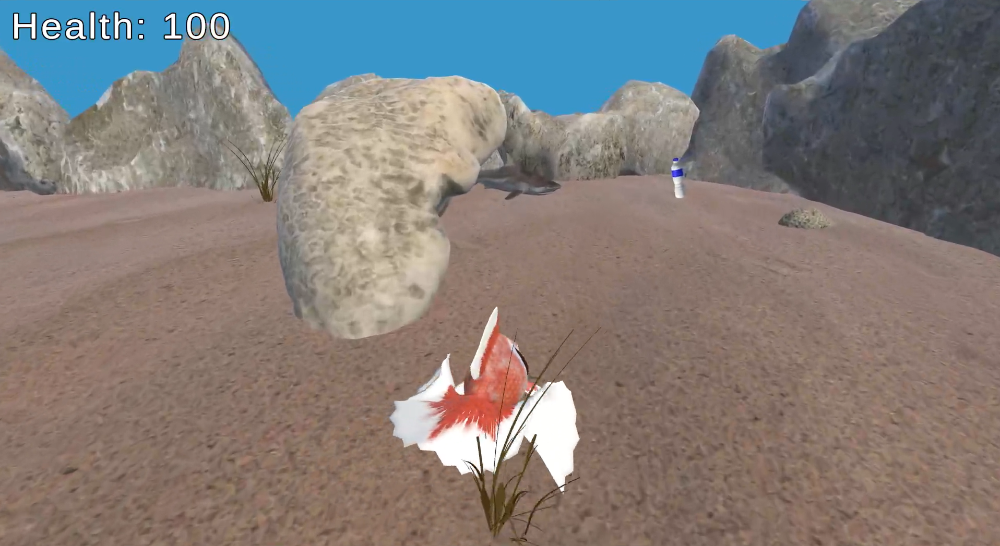

Dive into a Thrilling Ocean Adventure!
Fin & Recycle is an exciting and educational game that immerses players in an underwater mission to save the ocean. Take control of a determined fish, Fin, on a quest to clean the seas by collecting plastic bottles – but watch out for the shark that’s hot on your trail!
Key Features

- Eco-Friendly Gameplay: Discover the importance of ocean conservation while tackling the growing problem of plastic pollution.
- Smooth Controls: Glide gracefully through the water as you guide Fin on their heroic mission.
- Intense Chase Mechanics: Stay alert and outmaneuver a persistent shark determined to stop you!
- Raise Awareness: Every plastic bottle collected reinforces the message of protecting our planet’s precious oceans.